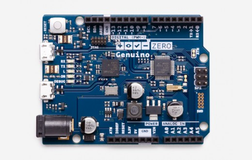

Arduino UNO
UNO se trata de la mejor placa
para empezar con la electrónica
y la programación.
Si es tu primera experiencia con
la plataforma, UNO es la placa más
robusta con la que puedes empezar a
experimentar. UNO es la placa más
usada y documentada de toda la familia
de placas Arduino©.

Arduino Zero
Arduino Zero es una extension simple pero
potente de 32 bits de la plataforma establecida por
UNO. Esta placa opta por ofrecer una plataforma para proyectos
innovaticos en dispositivos IoT inteligentes, technología de vestir,
automoción de alta tecnología, cosas alucinantes con robótica y mucho mas.